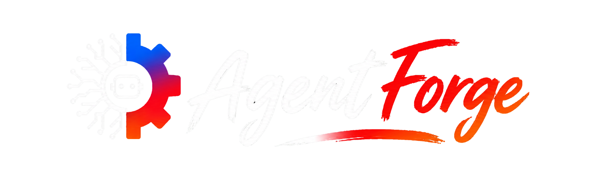
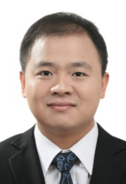
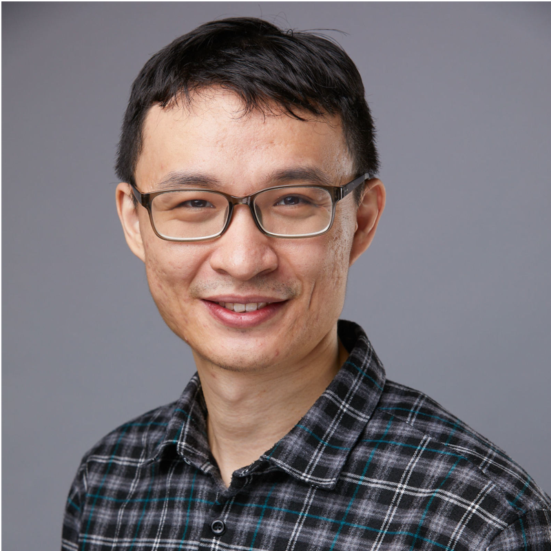
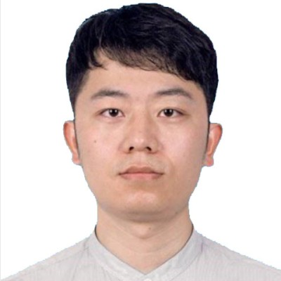
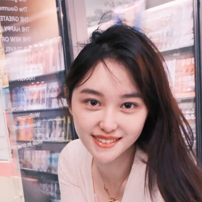
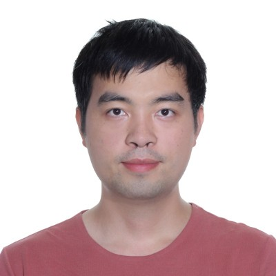
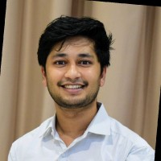
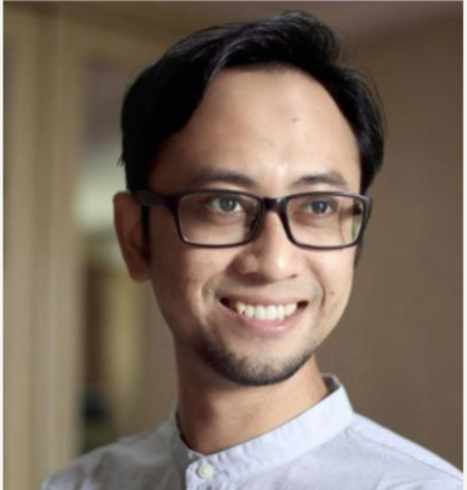
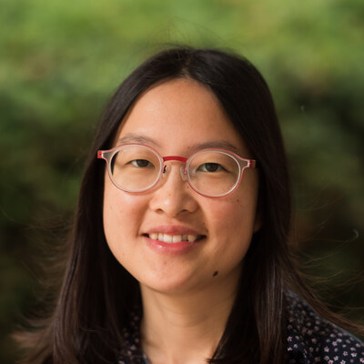
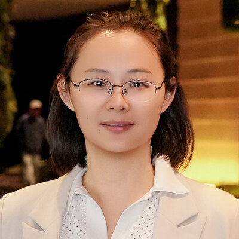

Five open tutorials
Slides and Colab notebooks that run without any local installation.
- From chatbot to agent
- Agentic memory
- Agents on platforms: MCP and Agent Skills
- Multi-agent systems
- Evaluating agents

Reliable, frontier, responsible AI for science
The workshop has ended. Its tutorials, code and hackathon projects are open for anyone to use and build on.
All materials from AgentForge 2026 are public. Use them in your own teaching and research.
Slides and Colab notebooks that run without any local installation.
The teaching agent from Tutorial 1: a small, complete AI agent for the terminal and for Python, with the agent loop in plain sight. Released as an open-source package on 23 November 2026, it installs with one command on macOS, Linux and Windows.
github.com/Superionichuan/mini_agentTeams built research agents during the week and evaluated them before presenting, from a checker that finds mathematical errors in papers to an agent that helps judge how novel a research idea is. Their code is public.
See the showcaseWhat is an AI Agent? An AI agent extends beyond a conventional chatbot. It is a system in which an AI model pursues a defined goal by making decisions, planning steps, and drawing on external tools and data sources, carrying out multi-step tasks under varying degrees of human oversight.
Why Scientists Should Understand AI Agents AI agents are advancing rapidly and are likely to remain part of research practice. As technology companies develop ever more capable agents, it is reasonable to ask why scientists should learn how they work rather than simply adopt finished products. This workshop rests on three considerations.
Our Approach The workshop does not aim to train participants as AI developers. Participants build AI agents to understand how they operate, what they can and cannot do, and how to adapt and evaluate them for their own research. Scientists need not build every tool themselves, but they should understand the tools they use. AI agents may increasingly automate research tasks, yet scientific judgment and responsibility remain with scientists.
What You Will Learn and Do
AgentForge was inspired by a Schmidt Sciences community event: the Schmidt Research Software Engineering Training Programme in Oxford (11–20 September 2025). For ten days, fellows from very different fields worked in small teams and built research software together. Some of us met there.
That experience of learning by building, side by side, is what we wanted to pass on. It shaped how we designed AgentForge: tutorials with code that runs, followed by a hackathon in which teams build and evaluate their own research agents. We want to carry that spirit forward, from one Schmidt Sciences community to the next and beyond.



President's Chair Professor and Head of Division of Artificial Intelligence, College of Computing and Data Science, NTU
Prof. Bo An holds a President’s Chair Professorship at Nanyang Technological University (NTU), Singapore, where he heads the Division of Artificial Intelligence within the College of Computing and Data Science. His research spans multi-agent systems, computational game theory, reinforcement learning and optimisation, with applications in security, sustainability and resource allocation. He is a Fellow of the Association for the Advancement of Artificial Intelligence (AAAI) and Editor-in-Chief of IEEE Intelligent Systems.

Project Leader at BEARS and Co-founder of PUDA
Dr. Zekun (Danny) Ren is a Project Leader at the Berkeley Education Alliance for Research in Singapore (BEARS) consortium and Co-founder of PUDA, an LLM and agentic AI startup. His work focuses on artificial intelligence for scientific discovery, autonomous experimentation, and materials innovation, with particular interests in agentic AI, machine learning, and self-driving laboratories. He has extensive experience developing AI-enabled approaches that bridge advanced computational methods with real-world experimental and scientific applications.
Co-founder and CEO of Ajentik AI, Singapore
Mr. Volodymyr “Myr” Iermolaiev is Co-founder and CEO of Ajentik AI, a Singapore-based company developing agentic AI solutions for healthcare coordination. With a background in enterprise software and AI systems, he focuses on helping patients, families and care teams stay connected during the transition from hospital to home. He leads Ajentik AI’s work in developing healthcare coordination solutions for patients, families and care teams.

Schmidt AI in Science Postdoctoral Fellow,
Nanyang Technological University (NTU)

Master's candidate,
Xidian University, Tsinghua university, ByteDance Seed
Schmidt AI in Science Postdoctoral Fellow,
National University of Singapore (NUS)

Schmidt AI in Science Postdoctoral Fellow,
Nanyang Technological University (NTU)
NTU AI4X Postdoctoral Fellow,
Nanyang Technological University (NTU)

PhD student,
Materials Science and Engineering, Nanyang Technological University (NTU)

PhD student,
Materials Science and Engineering, Nanyang Technological University (NTU)

Schmidt AI in Science Postdoctoral Fellow (Alum), University of Michigan (UM)
| 17:00–20:00 | Reception dinner at NEC, Cypress Hall 2 |
Venue: NEC, Angsana Theatre 2
| 9:00–9:30 | Opening remarks |
| 9:30–10:20 | Keynote 1: Prof. Bo An, AI Agents: From Scaffolding to Self-Improvement |
| 10:20–10:40 | Coffee break |
| 10:40–12:05 | Tutorial 1: From Chatbot to Agent |
| 12:05–13:05 | Lunch |
| 13:05–14:30 | Tutorial 2: Agentic memory |
| 14:30–14:35 | Coffee break & Poster session start |
| 14:35–16:00 | Poster session |
| 16:00–17:00 | Travel to Chinatown by a charter bus(off-site) |
| 17:00–18:15 | Dinner |
| 18:15–19:30 | Cultural walk guided tour |
| 20:30–21:30 | Bus back to NEC |
Venue: NEC, Angsana Theatre 2
| 9:00–9:45 | Keynote 2: Dr. Zekun Ren, Application of Agentic AI in materials science |
| 9:45–10:30 | Keynote 3: Mr. Volodymyr Iermolaiev, Applied Agentic AI: From Concepts to Real-World Applications |
| 10:30–10:50 | Coffee break |
| 10:50–12:20 | Tutorial 3: Agents on Platforms, MCP & Skills |
| 12:20–13:20 | Lunch |
| 13:20–14:50 | Tutorial 4: Multi-agent |
| 14:50–15:10 | Coffee break |
| 15:10–17:00 | Hackathon 1: team forming, brainstorming |
| 17:00 | Free evening (Dinner on your own) |
Venue: NEC, Angsana Theatre 2
| 9:00–10:30 | Tutorial 5: Evaluation |
| 10:30–10:50 | Coffee break |
| 10:50–12:20 | Hackathon 2: finalize plan, 1–2 min (1 slide) presentation on topics |
| 12:20–13:20 | Lunch |
| 13:20–14:50 | Hackathon 3: think about evaluation |
| 14:50–15:10 | Coffee break |
| 15:10–16:30 | Hackathon 4: 1–2 min (1 slide) presentation on evaluation plan and progress |
| 16:30–17:30 | Travel to Lau Pa Sat by a charter bus(off-site) |
| 17:30–19:00 | Dinner at Lau Pa Sat |
| 19:00–19:45 | Walking tour |
| 20:30–21:30 | Bus to NEC |
Venue: NEC, Angsana Theatre 2
| 9:00–10:30 | Hackathon 5: work time |
| 10:30–10:50 | Coffee break |
| 10:50–12:20 | Hackathon 6: prepare demo |
| 12:20–13:20 | Lunch |
| 13:20–14:50 | Hackathon 7: prepare presentation |
| 14:50–15:10 | Coffee break |
| 15:10–17:00 | Presentations, Awards and Closing |
| 17:00–18:00 | Travel to dinner by a charter bus |
| 18:00–19:00 | Dinner at Garden by the bay |
| 20:30–21:30 | Bus to NEC |
Schmidt AI in Science Postdoctoral Fellow,
Nanyang Technological University (NTU)
Schmidt AI in Science Postdoctoral Fellow,
Nanyang Technological University (NTU)
Schmidt AI in Science Postdoctoral Fellow (Alum), University of Michigan (UM)

Schmidt AI in Science Postdoctoral Fellow,
Nanyang Technological University (NTU)
Schmidt AI in Science Postdoctoral Fellow,
National University of Singapore (NUS)
Master's candidate,
Xidian University, Tsinghua university, ByteDance Seed
The AgentForge Playbook. We are writing an open guide to running a hands-on AI-agent workshop for scientists, drawn from what worked, and what did not, at AgentForge 2026: how we designed the programme, the tutorials, the hackathon and its evaluation, the timeline and the budget, with templates that other organisers can reuse.
Built together. Everything here is open source. Use the materials in your own teaching, open an issue or a pull request, or take a hackathon project further for your own research. We will open the playbook to contributions, so that every workshop that uses it can make it better.
AgentForge on GitHub